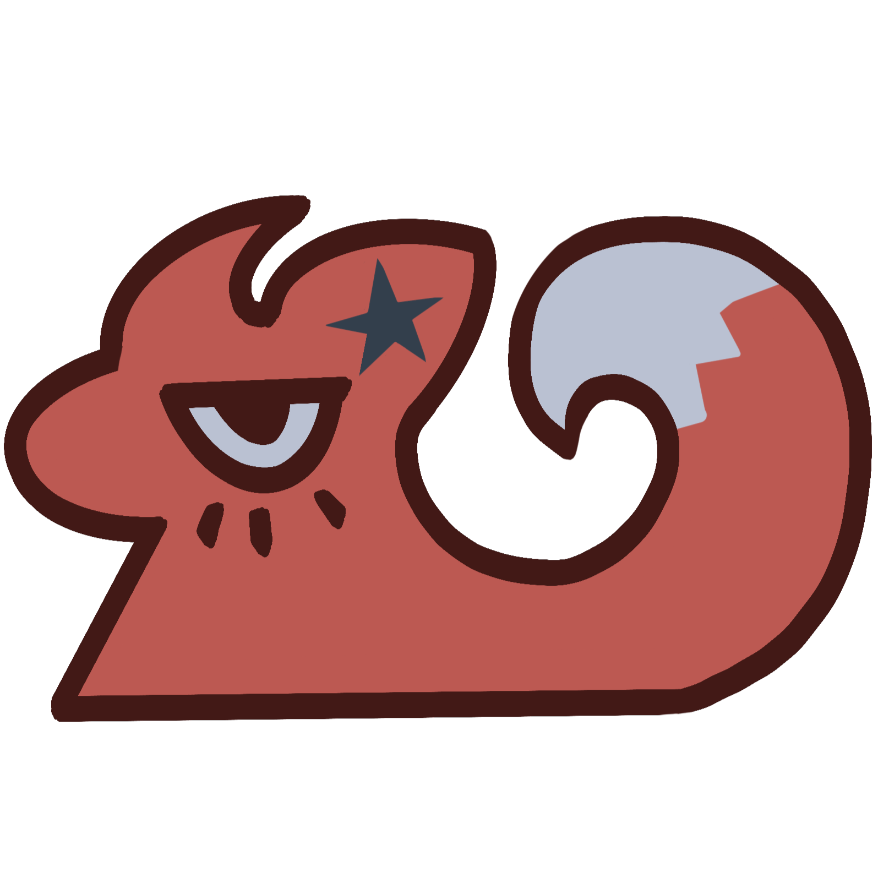
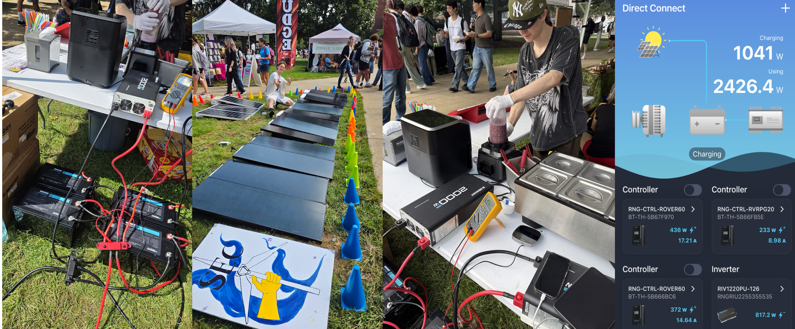
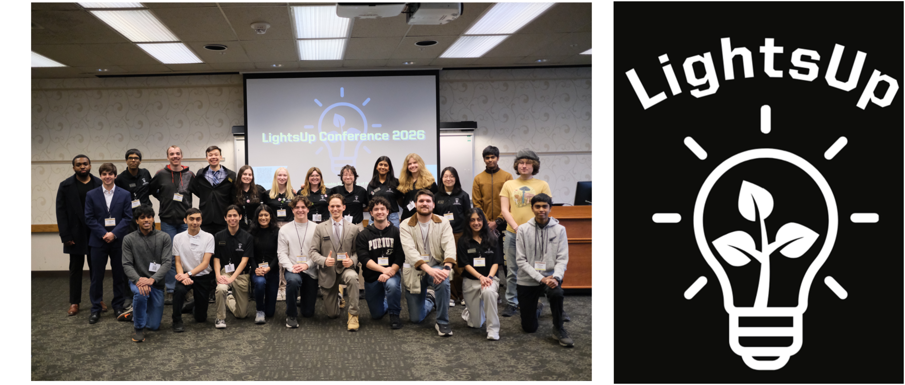

Hi! I'm Iris, a sophomore in Mathematics at Purdue University, with a minor in Computer Science (starting
spring 2027)
My strengths involve creating successful algorithms, creating 3D and pixel art assets,
collaborating with people and creating video games.
I've completed projects in Unity, C#, Blender, and VS Code, mainly experimenting
different ways to create a video game, enjoyable for kids and adults. Some of which has been showcased and
ranked Top 5% in narrative.
From programming, design to marketing, the whole process that underlies beneath
a video game is what motivates me to keep pushing harder. I'll continue to "reach for the moon.
touch the stars", and I'm thrilled for every step I make.

Coordinated outreach between Student Associations and 50+ researchers for 130+ attendees conference.
Directed VR-Room accessibility for attendees and handled poster session logistics.

Deployed modular solar array systems capable of generating 3.2kW, successfully powering the Purdue University
Farmer’s Market for two weeks
Designed, constructed, and stress-tested physical wind turbine structures to store renewable energy.
Currently coordinating outreach to sustainability clubs and creating artwork with club members to organize an art gallery.
Schedule meetings, assign each members adequate roles, and handle the organization of a division within the club.